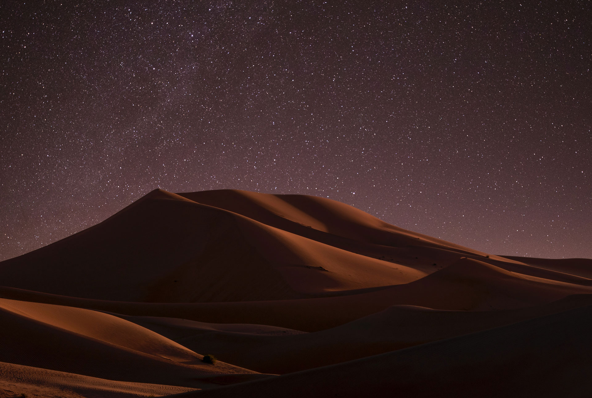
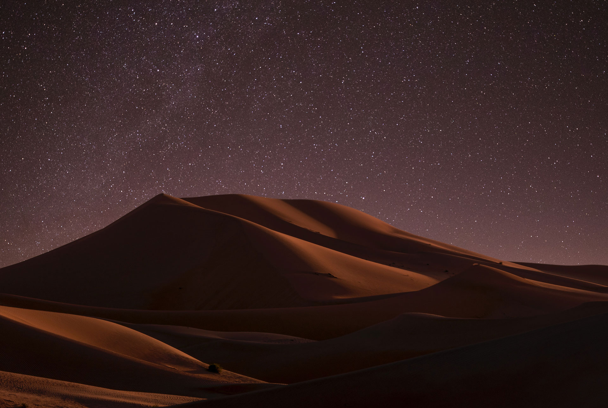

ZAGOURA
Zagora It is flanked by the mountain Zagora from which the town got its name. Originally it was called 'Tazagourt' (ⵜⴰⵣⴰⴳⵓⵔⵜ) the singular of plural 'Tizigirt' (ⵜⵉⵣⵉⴳⵉⵔⵜ), Berber for 'twinpeaks', referring to the fortress of the Murabitun, or Almoravid, people. In old European maps the mountain Zagora is already indicated but the town itself was only built in the 20th century. On the top of the Zagora mountain the remains of an Almoravid fortress can still be seen.
 
